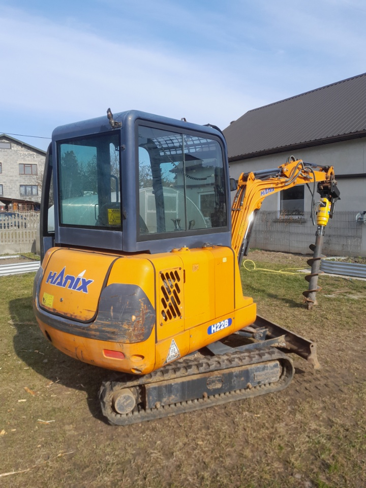
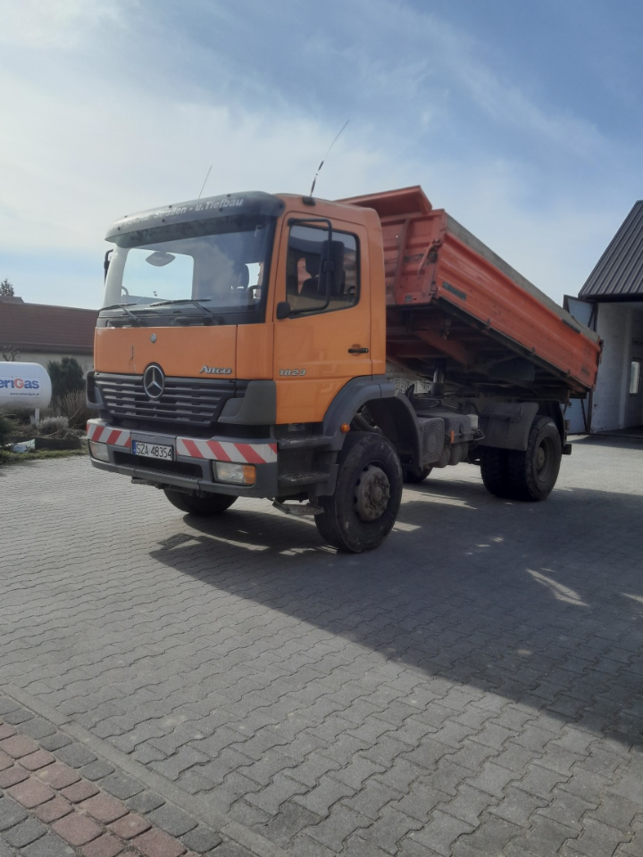
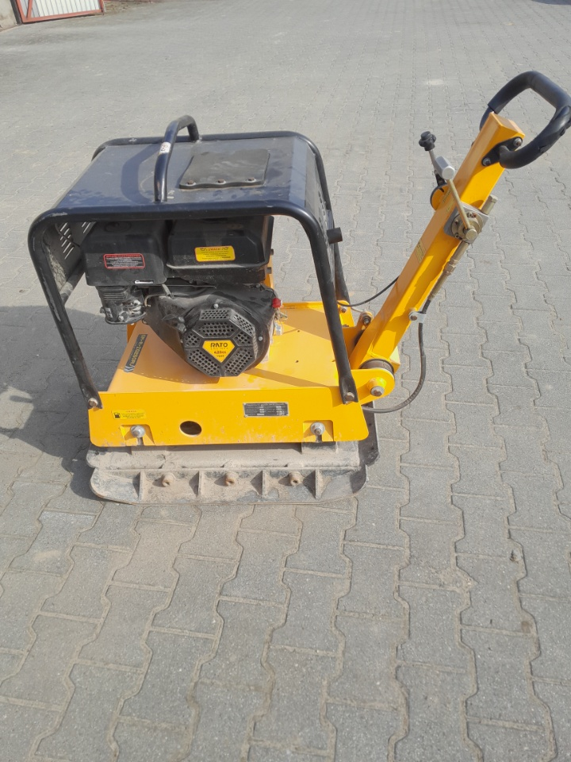
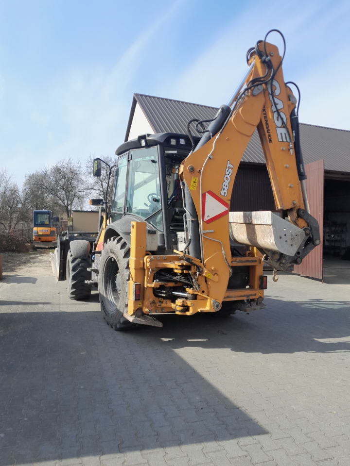
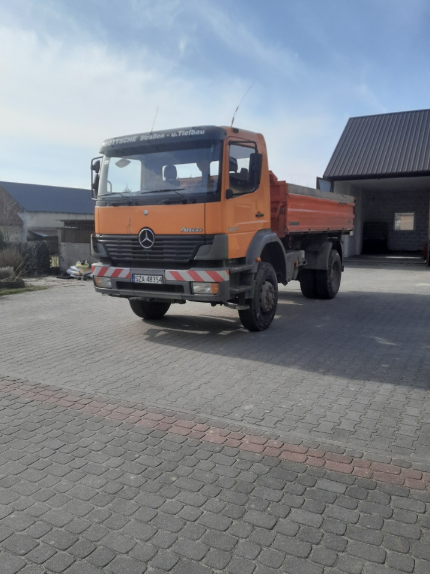
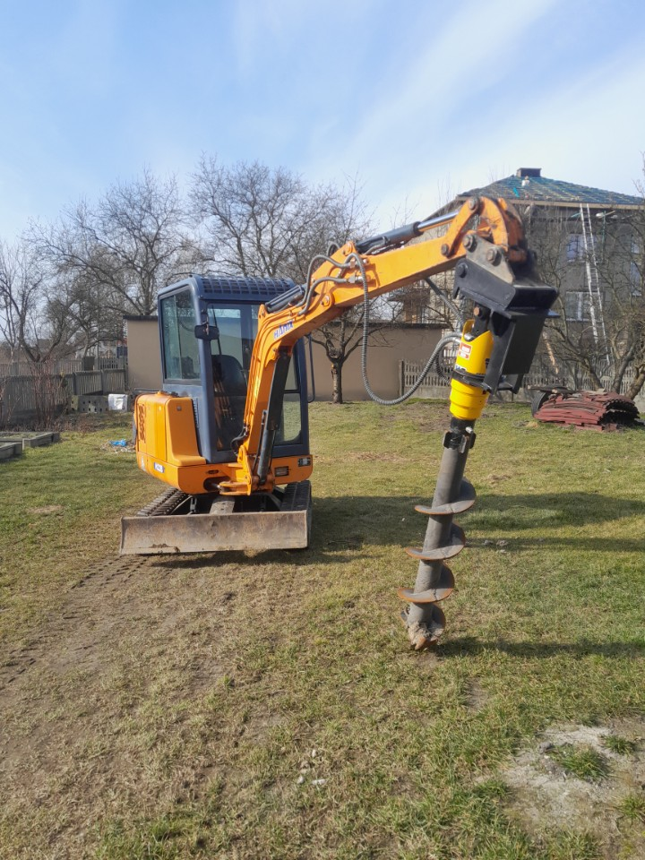
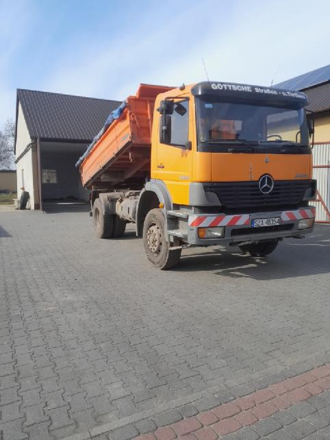
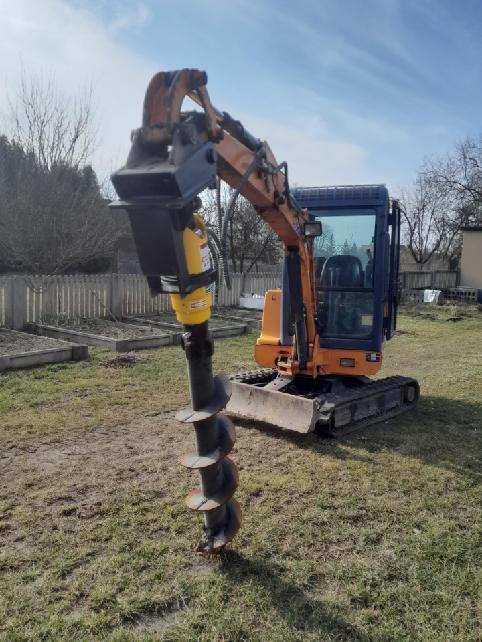
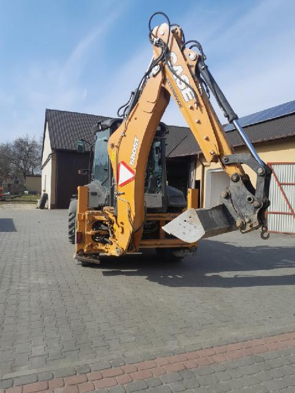
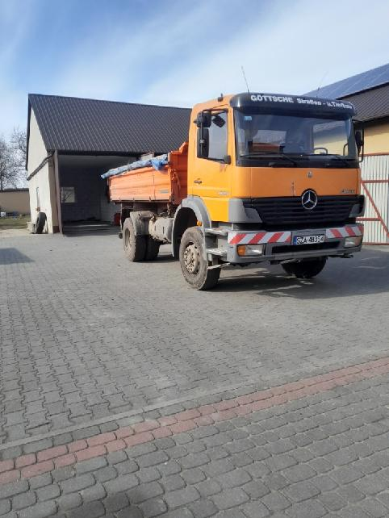

Usługi koparko-ładowarki w Zawierciu i okolicach
Kompleksowe prace ziemne, wykopy, transport piasku i kruszyw. Dojazd do Niegowonic, Ogrodzieńca i całego powiatu zawierciańskiego.
ZadzwońNasze usługi
Realizujemy usługi koparko-ładowarką oraz minikoparką w zakresie kompleksowych prac ziemnych i transportowych.
Kopanie i wykopy
Wykopy pod kanalizację, fundamenty, niwelacje terenu oraz inne roboty ziemne.
Młot wyburzeniowy
Usługi młotem wyburzeniowym – rozbiórki, kruszenie betonu i skał.
Wiertnica hydrauliczna
Wiercenia w ziemi – słupy, fundamenty, odwierty.
Transport materiałów
Transport samochodem samowyładowczym: piasek, żwir, kruszywa, materiały budowlane.
Nasz sprzęt
Dysponujemy nowoczesnym parkiem maszynowym. Wszystko, czego potrzebujesz do prac ziemnych i transportu.

Koparko-ładowarki Case
580ST Extendahoe – wykopy, roboty ziemne

Minikoparki Hanix
Z wiertnicą hydrauliczną i młotem wyburzeniowym

Wywrotki Mercedes i MAN
Transport piasku, żwiru i kruszyw

Zagęszczarki
Płyty wibracyjne – utwardzanie terenu
Galeria sprzętu














Gdzie działamy
Świadczymy usługi koparko-ładowarki na terenie Zawiercia i całego powiatu zawierciańskiego.
Dojeżdżamy m.in. do: Niegowonic, Ogrodzieńca, Pilicy, Poręby, Łazów, Włodowic, Kroczyc, Żarnowca oraz okolicznych miejscowości.
Najczęściej zadawane pytania
Czy świadczycie usługi koparko-ładowarki w Niegowonicach?
Tak – wykonujemy prace ziemne w Niegowonicach i całym powiecie zawierciańskim. Dojazd do klienta bez dodatkowych opłat w ramach obsługiwanego obszaru.
Dojazd do Ogrodzieńca i innych miejscowości – czy jest możliwy?
Tak, dojeżdżamy do Ogrodzieńca, Pilicy, Poręby, Łazów, Włodowic, Kroczyc, Żarnowca oraz wielu innych miejscowości w okolicy.
W jakiej odległości działacie? Czy dojedziecie do mnie?
Działamy w promieniu do 50 km od Niegowonic. Jeśli nie jesteś pewien, czy znajdujesz się w naszym zasięgu – zadzwoń i dopytaj się. Chętnie potwierdzimy możliwość dojazdu i wycenimy usługę.
Kontakt
Potrzebujesz koparko-ładowarki, wykopów lub transportu materiałów? Zadzwoń!
Usługi transportowo-sprzętowe
Snopek Sylwester
ul. Kościuszki 24, 42-454 Niegowonice
Zawiercie, Niegowonice, Ogrodzieniec i okolice